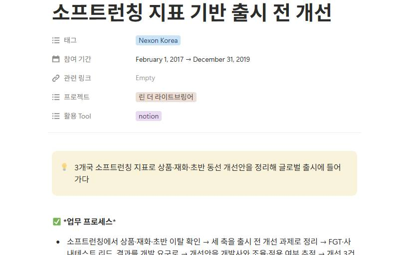
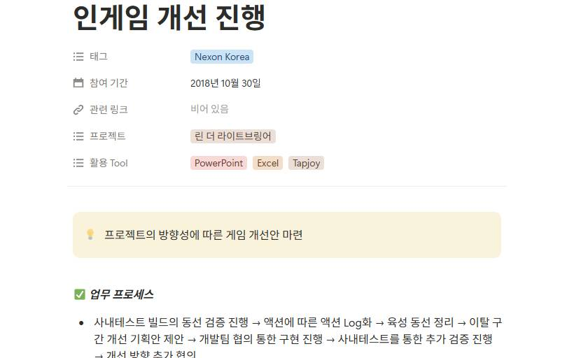
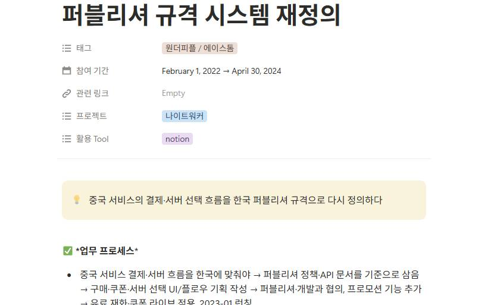
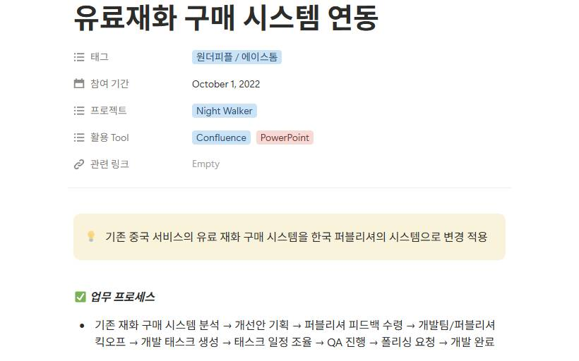
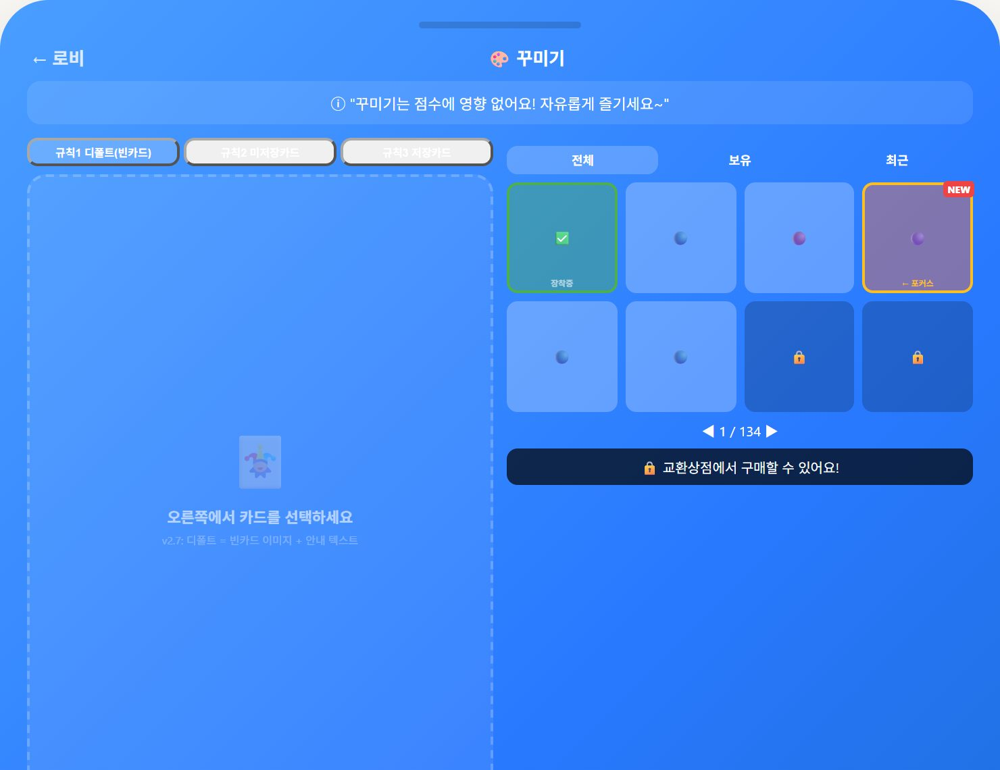
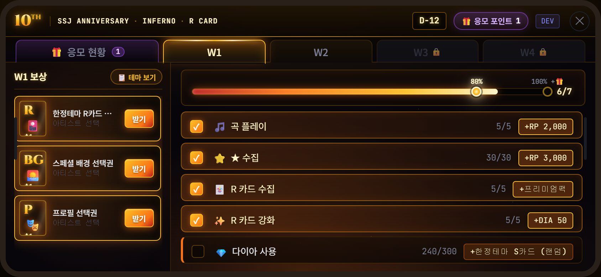

Portfolio
Henry Lim
Game Live Service PM & Director · 19 yrs
Turn user needs into product direction, and dev priorities into shipped work.
Email bluedaylol80@gmail.com
Site https://bluedaylol80.github.io/henry-portfolio/en/
Notion resume Notion resume ↗
Issued 2026-09-09
Summary and the four areas
19 years in games — global launches and live ops. I turn user research and live metrics into product direction and dev priorities, and as a director I ran dev milestones and cross-team work. Lately I prototype events with AI and automate routine work.
| Product decisions & milestones | Deciding what to build from research and metrics, then reassembling the design and dev milestones and carrying it through to shipped work — the director and PM role. It includes reassembling and coordinating milestones before launch. Case — from user research to shipped events · Case — soft launch metrics → pre-launch fixes |
|---|---|
| Launch & live ops | Soft launches, launches, live operations and sunsets actually run. Soft launches for Lyn, Chaos Chronicle and Shadow Seven, publishing integration for Night Walker, and the remaining issues from 5 sunset services. Case — redefining the systems to publisher spec · Work — Chaos Chronicle sunset ops |
| Team & hiring | Hiring, team structure and who owns what. At Dalcomsoft I restructured 22 people across three teams into 13 across two while holding the QA lead role; at Skypeople I set up the business and operations teams from scratch. Case — restructuring (in the Dalcomsoft detail, "Also from the same period") · Work — Skypeople org setup |
| Operational standards | Turning repetitive work into rules and automation. I automated SKUs for 7 projects with Google Apps Script and documented the abuse follow-up SOP and the consolidated Notion work history. Work — SKU automation and the abuse SOP |
Portfolio · Product decisions & milestones
ShippedProduct decisions & milestones
| In one line | Turned the survey request for webview events into shipped in-game minigames and webview events |
|---|---|
| Period & role | Employed 2024.10 – 2026.07 · Team Lead, Live Game Design (live director) · case period: survey 2025.11 → launch 2026.05 |
| Problem | In the November 2025 satisfaction survey across 6 titles (Korean, English, Japanese), IP satisfaction was high and players asked for the old webview events back. I took that on as an event improvement task. |
| Decision | With limited dev resources, I put in-game minigames first because they could run on existing systems, and extended to webview events, which needed separate development, afterwards. |
| Decision scope | I set the response order and the event scope (MVP); the dev schedule and launch dates were settled with the dev team and management. |
| What I did | Minigames v1 and v2 rolled out title by title (v1 2025-12, v2 2026-01). For the decoration event timed to a new group launch I wrote the brief myself and built a working AI prototype for the pre-development review, then set the scope down to core features to fit the dev schedule. After that I built the SuperStar JYP Nation 10th anniversary webview event prototype. |
| Deferred | Collection, display and community improvements from the same survey went to the H1 2026 direction proposal. For the decoration event, deck expansion, gacha and grooming details were deferred and only the core shipped. |
| Result & status | Shipped — minigames v1 and v2, the decoration event (2026-04-30 to 05-23, SuperStar STAYC new group launch) and the 10th anniversary webview event. |
| Evidence | Notion "Satisfaction survey summary" · Notion "decoration_event" · 2 demos (decoration prototype · SSJ 10th anniversary webview) |
Evidence From user research to shipped events ↗ · Recurring product policy rework ↗ · Restructuring with design, QA and CS under one lead ↗
Portfolio · Launch & live ops
Project shippedLaunch & live ops
| In one line | Turned soft launch metrics from 3 markets into product, currency and early-flow fixes before the global launch |
|---|---|
| Period & role | Team Lead, Mobile Business Division, Nexon Korea (employed 2015.07 – 2019.10) · Lyn business PM 2017.02 – 2019 (developer collaboration, build coordination) |
| Problem | Bringing the developer build up to launch condition meant turning user tests and market metrics into development requests. The soft launch (Australia, Malaysia, the Philippines, 2019.01–02) showed an unbalanced product mix, slow paid-gem spending and early drop-off. |
| Decision | I framed product mix, currency loop and early flow as fixes to close before launch, and set the product direction by benchmarking a comparable title (Langrisser). |
| What I did | As business team lead I ran the FGT (2018.06–07, testers selected against 10 competing titles) and the internal test (2018.11, 3 days) and turned the results into development requests. After the soft launch I wrote up the product, currency and early-flow fixes and aligned them with the developer. |
| Result & status | Project shipped (2019 global grand launch). Three fixes landed in the grand launch build: the reworked product lineup, the trading post timing and its dedicated store, and the early flow. Project results were a peak of #3 grossing on the App Store and Google Play in Korea and ₩18.3B cumulative revenue in 2019; my contribution was test lead, build improvement coordination, and the product and currency proposals. |
| Evidence | Notion "In-game improvement proposal" · soft launch metrics report (business team, not public) · FGT satisfaction data and internal test report (business team, not public) |


Portfolio · Launch & live ops
Project shippedLaunch & live ops
| In one line | Redefined the payment and server-select flows of the China service to the Korean publisher spec |
|---|---|
| Period & role | 2022.02 – 2024.04 · Part Lead, Business Team, Wonderpeople/Acestorm · Night Walker Korea (publisher: Nexon), business and publishing integration |
| Problem | The paid-currency purchase system and the SDK-based server-select flow from the China service had to be reworked for Korea, and the systems had to be defined against the publisher payment, coupon and server policies. |
| Decision | Taking the publisher policy and the internal API docs as the baseline, I redefined the UI/UX and the user flow of all three systems — paid-currency purchase, coupons and server select — to the Korean spec. |
| What I did | I wrote the paid-currency purchase integration design, the coupon feature definition and the server-select UI/flow design, and aligned them with the publisher and the dev team. After launch I analyzed weekly sales to propose products and used live metrics to propose fixes for player hurdles. |
| Result & status | Project shipped (Korea launch 2023-01-26). Paid currency and coupons are recorded as live; server select is documented as foundation work complete. The project reached 330K+ new users in Korea; my contribution was the integration work and the product and hurdle proposals. |
| Evidence | Notion "Paid-currency purchase system integration", "Coupon system integration", "Server-select UI/flow design", "Added promotional product feature" |


Project timeline
| Company | Team, role, period | Headline number |
|---|---|---|
| DalcomsoftSuperStar series reshaped 11 → 7 (K-pop IP) | Team Lead, Live Game Design · 2024.10 – 2026.07Reshaped 11 titles to 7: retired 5, launched SSWO, and automated SKU management across the seven remaining projects with Google Apps Script | 11→7 |
| Wonderpeople · AcestormNight Walker, Super People | Part Lead, Business Team · 2022.02 – 2024.04Night Walker 330K+ new users · DAU 63K · D+1 ~50% / Super People China 560K+ new users | 330K+ |
| NeowizMaster of Knights | Team Lead, Game Design · Snowball Studio · 2021.02 – 2021.10Led design of 10 new systems and 8 reworks; hired game designers and ran milestones | |
| SkypeopleFive Stars | Team Lead, Business Team · 2020.07 – 2021.02Set up and hired the business and operations teams, then ran launch prep and live ops — 200K pre-registrations · 280K+ new users · ₩2.4B revenue | ₩2.4B |
| Neptune LegendShadow Seven | Business PM, Studio · 2019.10 – 2020.04Weak results in Japan → added a rating management system → Google Play rating Japan 3.29 → global 4.4 · soft launch in 7 markets | 7 markets |
| Nexon KoreaLyn · Running Man Heroes · Dragon Nest 2 · Chaos Chronicle · Legion of Heroes | Team Lead, Mobile Business Division · 2015.07 – 2019.10Lyn ₩18.3B · #3 on both stores / Chaos Chronicle ₩9.8B · #7 · featured / Legion of Heroes 5× prior revenue | ₩18.3B |
| Netmarble BlueKON | Business PM, KON Studio · 2015.03 – 2015.07Designed the KON tutorial flow and analyzed competing titles as launch foundation work | |
| SoftnyxNTD · Rakion 2 · Grand Age | Business PM, Strategic Business Team · 2011.07 – 2015.02Designed 2 internal tests · 4 FGIs · 2 FGTs for NTD, analyzed monetization across 5 titles, prepared the Latin America launch | |
| NHN ServiceTera web ops · Atlantica · R2 | Part Lead, Hangame Operations Division · 2008.05 – 2011.07Ran the Tera web ops part and FUN QA gameplay analysis on 4 titles; live ops for Atlantica and R2 | |
| WebzenSUN Online | Operations Team · 2006.04 – 2007.10Live ops for the SUN Online launch — VOC analysis and log audits |
* 2007.10 – 2008.05 returned to university (Kangnam University, Computer Engineering, class of 2009)
From idea to working screen with AI

Dalcomsoft · work prototypes
Turned collection and display requests from the satisfaction survey into a decoration event design and wireframe. Open the link below for the demo (Korean).
How to try it Pick items on the decoration screen and place them.
Why it was built Built to settle the screen flow before development started.
My part I wrote the brief myself and built the prototype.
Shipped? The event shipped 2026-04-30 to 05-23.
Demo Open ↗
Public screens are a summary with internal details removed.

Dalcomsoft · work prototypes
Validated on a working webview instead of a spec — I built the clickable prototype myself with AI, covering weekly missions, reward claims and the entry flow. Open the link below to play it (Korean).
How to try it Switch the week and compare the reward lock states, then follow missions → claim rewards → entry flow.
Why it was built Built to validate the flow on a working webview instead of a spec.
My part I built the interactive prototype myself with AI.
Shipped? Shipped — May 2026.
Demo Open ↗
Public screens are a summary with internal details removed.
Our Household Budget — A budget web app the two of us use every day. Built on Google Apps Script + a single HTML file, running live. Open ↗
Contact
Henry Lim bluedaylol80@gmail.com · Site ↗ · Notion resume ↗
This document is generated from the site. Issued 2026-09-09 · © 2026 Henry Lim · All figures on this site come from my public resume.